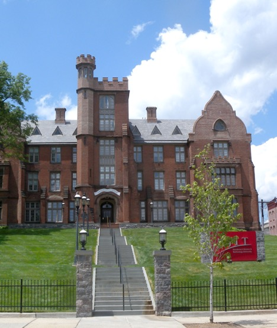

Conference venue
SISAP 2019 will be held at Eberhardt Hall
New Jersey Institute of Technology (NJIT)
University Heights
Newark, NJ 07102
Historic Eberhardt Hall, New Jersey Institute of Technology
Built in 1856-57 its original purpose was to serve as a home for Newark's orphans. It is located at 323 Martin Luther King Jr. Blvd. in the University Heights section of Newark. Eberhardt Hall is listed in the National Register of Historic Places and is a beautiful example of 19th-century Gothic Victorian architecture, in conjunction with 15th- and 16th-century castle design.
In the early 2000s, NJIT embarked on a quest to bring the 21st century edge to the campus. This included the restoration of Eberhardt Hall in 2005 to serve as the NJIT Alumni Center, and to provide space for the NJIT Club for dining and receptions, for a conference enter and for some administrative offices. The restoration cost 13 million dollars, of which NJIT settled $7 million and the State of New Jersey contributed the remaining $6 million.
The restoration took great care to ensure period authenticity. While no information was available about the exact appearance of the building’s interior, the colors are very typical of the era. Further, the wall and ceiling coverings reproduce patterns introduced by Christopher Dresser, arguably the 19th century’s foremost designer of residential and industrial environments. With the goal of furnishing ordinary people with well-made, efficient and engaging goods, Dresser championed design reform in 19th century Britain while embracing modern manufacturing in the development of wallpaper, textiles, ceramics, glass, furniture and metal ware.
